Entrelinhas Pontilhadas, animação italiana original da Netflix, acompanha um cartunista (Zerocalcare) de meia idade enfrentando uma crise de identidade em sua vida pessoal e artística. Ele passa a questionar o caminho que sua vida tomou até aquele momento e se fez as escolhas certas durante o percurso. Tudo isso enquanto discute com sua própria consciente, personificada em um tatu falante. A série explora questões da vida adulta e de relacionamentos românticos de forma ácida e realista.